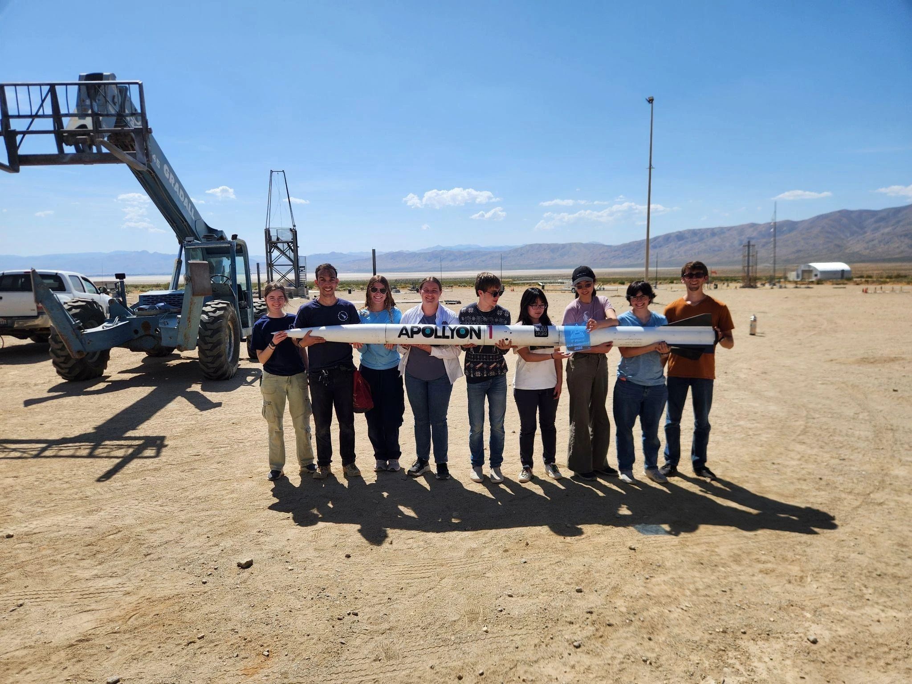
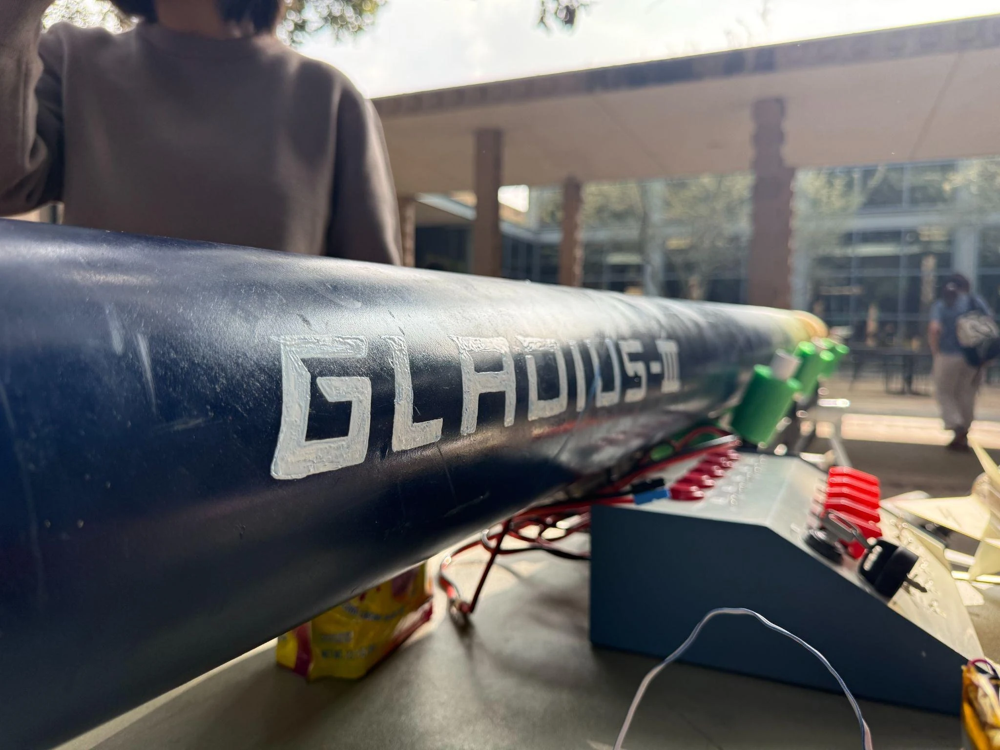
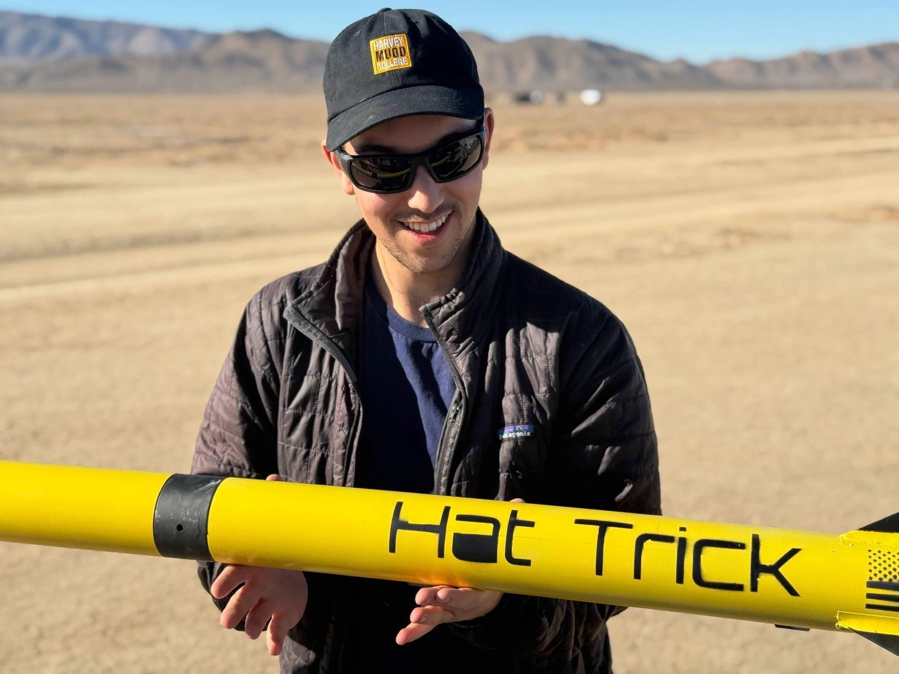

Independent flight program Feb 2025 – Mar 2026
Hat Trick
An independently built Level 2 rocket, two hard landings, and the recovery system that came out of them.
Six flights · two full recoveriesEngineering portfolio · Harvey Mudd College
I design, build, and test flight vehicles, embedded electronics, and systems that work beyond the workbench.

Analysis. Craft. Field experience.
I’m an engineering student at Harvey Mudd and Chief Engineer of our rocketry team. Over the past two summers, I worked as an engineering intern on airport electrical infrastructure. My projects range from composite rocket structures to custom flight computers and autonomous sensing systems.
The work below follows the whole process: the trade studies, the parts I made, the tests that found problems, and the changes that made the next test better.
Independent flight program Feb 2025 – Mar 2026
An independently built Level 2 rocket, two hard landings, and the recovery system that came out of them.
Six flights · two full recoveriesEmbedded systems 2026 – Present
A custom STM32 board: power, sensing, telemetry, deployment control, and the work of bringing it to life.
Assembled & bench tested
Flight analysis & structures 2024–2025
Motor trades, composite structures, and a flight to 17,172 feet that finished third at FAR Unlimited 2025.
Flown · 3rd placeField robotics & instrumentation Course project
A robotic boat, a custom sensor winch, and the gap between a calibrated instrument and a useful field measurement.
Field testedGNC & flight research Jan – Dec 2025
Guidance and flight analysis for radio telescope beam mapping, developed through more than 40 autonomous flights.
40+ autonomous flightsLevel 3 vehicle 2026–present
A Level 3 certification vehicle and avionics testbed, now being redesigned around the AeroTech N1000W.
N1000W redesignElectromechanical restoration 2025
A complete mechanical keyboard restoration: switch work, circuit-board rework, acoustic treatment, and reassembly.
Completed
At the range with Hat Trick, my independent Level 2 rocket.
About me
My first team rocket taught me to connect simulations with manufacturing. Building Hat Trick on my own made every interface my responsibility. Leading Apollyon then meant making those interfaces work across a 40-person team.
That progression shapes how I work: understand the requirements, make the hardware, test the assumptions, and stay with the problem through integration. Atlas is the next step—designing the electronics that will help me understand the flight itself.
May 2025–August 2026
Engineering Intern I → II → III
I worked two summers and part-time throughout the academic year between them. I designed airfield electrical networks and lighting layouts for SEA-TAC, SFO, and SLC in AutoCAD Civil 3D. I also supported photometric analysis, automated drawing checks with AutoLISP, and built a QGIS plugin for navigating georeferenced 360° field footage.
Earlier work included an electrical forecasting and project-management system for SFO’s $1.6B electrification program, covering more than 250 projects, and tools that accelerated FAA documentation fivefold.
August 2024–present
Mechanical Member → Safety Officer → President
I lead a 13-member team designing and building hybrid-electric vehicles, coordinating project planning, fabrication, and testing. My hands-on work includes frame, braking, and steering assemblies, alongside documentation for safe drivetrain operation and manufacturing practices.
December 2025–present
Chief Technical Analyst
I translate technical research into analytical memos for proposals and industry discussions. My work includes payload concepts, mission architectures, integration constraints, and risk assessments for autonomous systems, as well as analysis of defense manufacturing processes and new product opportunities.
November 2024–present
President
I lead a mechanical keyboard club serving more than 90 students and run workshops that take members from design to assembly. Sessions cover soldering, stabilizer tuning, keycap design, and case and plate manufacturing.
May 2023–January 2024
Intern
I worked with doctoral researchers and faculty to evaluate neural operators for partial differential equations on a supercomputing cluster. I studied physics-informed, Fourier, and convolutional architectures alongside U-Nets, and presented findings on model behavior and future research directions.
Tools I use in the work
SolidWorks · COMSOL · MATLAB / Simulink · OpenRocket · RASAero II · QGIS
Composite layups · CNC & manual machining · Waterjet · Additive manufacturing · KiCad · STM32
Python · C/C++ · SQL · R · Git · Flight-log analysis · Trajectory reconstruction